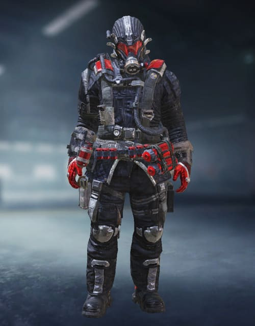

Simon «Ghost» Riley

Segundo al mando de la fuerza operativa 141 y reconocible por su icónico pasamontañas de calavera. Ghost lideró el equipo de
asalto encargado de registrar el piso franco de Makarov para obtener información útil.
Tengu – Undead Crusade
Los muertos caminan incluso en el fondo del mar y Tengu es el ùnico de sus hombre
que volvio para contar la historia del brote en su barco. Ahora caza a los no
muertos que le robaron a sus hombres y sustento.
Charly-Wolves
Gracias a que se crio con su padre y un grupo de cazadores furtivos de las llanuras africanas,
Charly cuenta con aptitudes de rastreo incomparables.
Puedes huir de ella, pero nunca esconderte.
Manta Ray
Es una novata con un gran talento y excelente desempeño. Si bien siempre pone su
deber en primer lugar, su amor por el mar es inmensurable.
Captain Park – Ranger
Una vez fue un famoso actor en el este de Asia, el Capitàn Park decidio seguir su sueño
militar como novato en el ejercito de paz internacional.
Battery-Indomitable
Con blindaje pesado, Erin "Battery" Baker opera màs alla de la primera linea
sin miedo, con municiòn altamente explosiva.
Firebreak Sinister

Trabajar tan cerca del fuego es algo que pocos se ofrecerian a hacer, pero podria
decirse que es algo que apasiona ardientemente a Krystof Hejek.
Prophet – High Voltage
Desde que era un niño, David "Prophet" Wilkes se sintiò fascinado por la tecnologìa.
Ahora, es un creyente de la fusiòn entre el hombre y la maquina, y usa su tecnologìa
para atacar y matar.
Nomad Wild Snake

Tavo "Nomad" Rojas es un esperto en la guerra selvàtica, capaz de mimetizarse
en los bosques y sobrevivir en la tierra casi indefinitivamente.
Busca venganza por sus amigos caisos usando su proeza para volver al entorno contra sus enemigos.